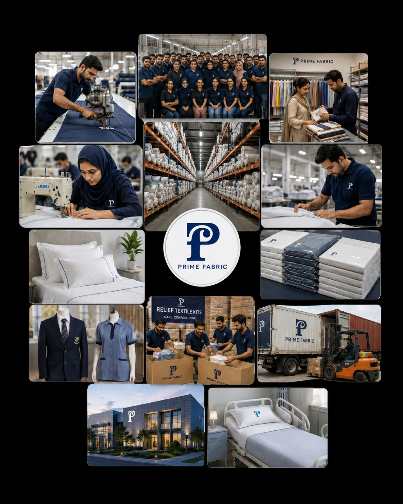

Requirement Discussion
We understand scope, product use, timelines, and scale requirements.
Textile Manufacturing & Stitching in Pakistan
We help hospitals, NGOs, schools, government projects, and brands turn fabric and stitching requirements into dependable uniforms, bedding, relief items, and bulk-stitched textile products with precision and scale.

Who We Are
Prime Fabric is a trusted textile manufacturing and stitching company specializing in bulk order solutions for institutions, brands, NGOs, healthcare, and public programs.
We take client orders, manufacture and stitch fabric-based products, and deliver uniforms, hospital textiles, bedding products, relief supplies, promotional items, and other cloth-related solutions with disciplined processes and reliable output.
More About UsFrom Inquiry to Delivery
Services
Prime Fabric brings disciplined manufacturing, stitching precision, and dependable delivery for organizations that need textile and cloth orders handled properly.

Large-scale production for institutional, relief, and commercial requirements.

Fabric cutting and stitching for specialized product requirements.

School, corporate, industrial, and staff uniform programs with reliable consistency.

Bed linens, patient garments, drapes, and supporting healthcare textile needs.

Textile essentials built for emergency support programs and NGO procurement.

Functional branded textile items for campaigns, events, and activations.

Reliable backend production for brands looking to scale their textile lines.

Structured supply support for schools, hospitals, government, and organizations.
What We Manufacture
Tailor
Master Tailor
Tailor
Inside Prime Fabric
We Work For
From hospitals and NGOs to procurement teams and private labels, Prime Fabric supports sectors that need dependable fabric manufacturing and stitching at scale.
Contact
Connect with Prime Fabric for uniforms, bedding, hospital textiles, relief items, and custom stitched products made and delivered at scale.